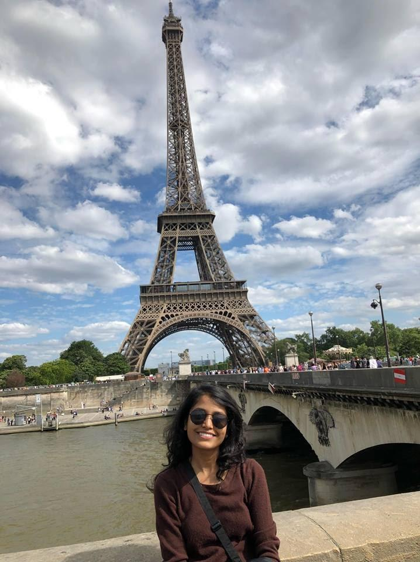
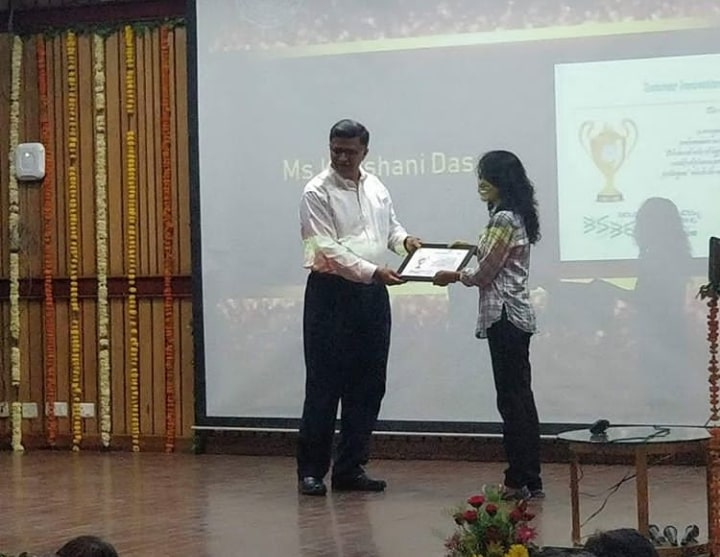

July 28, 2019
In the seventh article of the blog series - RISE,
Koushani Das, an undergraduate student in the
Department of Biological Sciences and Bioengineering from
the Y15 batch walks us through her journey in the field of
research at IITK and abroad. She did her summer internship
from the Ruhr University of Bochum, Germany. This blog gives
insights of the application procedure and internship
experiences that she had.
The Ruhr-University Bochum is one of the largest
universities in Germany and part of the Deutsche
Forschungsgemeinschaft, the most important German research
funding organization. It was founded in 1962 as the first
new public university in Germany after World War II.
Instruction began in 1965.

Having recently completed a Bachelors of Biological Sciences
and Bioengineering from IITK, I have come to an utmost
conclusion that research demands sheer dedication and immense
passion. Just like every other bewildered sophomore, I headed
towards research with a mindset to fill up quality content for
my resume! In this span of 4 years, I managed to have done an
internship with Central Drug Research Institute (CDRI), a
BIRAC funded project, academic internship in Germany and
finally mentored an IGEM project held at Hynes Convention
Center, Boston.

Well, it still takes a minute for me to fathom how I traversed
from one opportunity to another, mostly due to a sudden
developed interest in research with due course of time. So, in
this article I am going to present a step by step personal
experience of what attracted me to research, major hurdles
faced and how to overcome those. And just like people say
“BSBE main koi future nahi hai” trust me it’s just a gibberish
comment.
So, right from my third semester of study, I joined Prof.
Saravanan Matheshwaran’s lab and since then I got introduced
to Gel electrophoresis, culturing of bacteria, streaking on a
culture plate and the whole scenario of diligently working in
a lab. These advanced techniques fascinated me and soon after
that I applied to CDRI- CSIR labs where I got noticed by Dr.
Sukant Khurana who willingly offered me a project covering
neurological disorders including Parkinson’s project. I worked
under his guidance for over a year where we shared weekly
Skype calls discussing my progress and eventually my
formulated articles were published in his journal.
Immediately, after my fifth semester, our HOD sent a mail
across the department for participation in a BIRAC funded
project in Ahmedabad. So, I received an opportunity to spend
the winters in Gujarat, where I got exposed to lab techniques
like spectroscopy, HPLC, TLC, various extraction methods and
fortunately I was awarded the BIRAC grant to continue the
project in IITK.
 Simultaneously, my main intention was to secure a descent
academic internship during third year summers and hence I paid
particular attention towards strengthening my lab skills prior
to any international exposure. Technically, securing an
academic internship abroad is stated as ‘luck dependent’ or
‘very high CPI requirement’. But, neither did I have a very
high CPI nor was I extremely lucky! Hence, I did put
sufficient effort into formatting my resume, motivation letter
(listed down my accomplishments and future goals honestly) and
also recommendation letters (It’s pretty easy to obtain
recommendation letters from department of BSBE!). Moreover, I
started preparing my resume during second year summers with
immense help and advice from seniors. Trust me, securing a
descent international internship completely lies in your
resume, how you build it up strategically that will surely
capture the eyes of your employer (often a well-established
research experience sparkles more than your CPI!). So right
from the beginning of fifth semester, I jotted down various
institute and related professors that complemented with my
specific research interest (I was sure of not sitting for
internship season). Since, applying off program is a very
tedious job (people send 40 mails and get back 2 or 3 replies,
mostly self-funded), I majorly focused on a fully funded
internship that would suffice my stay abroad. Moreover,
travelling has always been a matter of interest hence a
foreign internship would suffice both of my clauses –
enrichment of knowledge as well as exploring cultural
diversity!
Simultaneously, my main intention was to secure a descent
academic internship during third year summers and hence I paid
particular attention towards strengthening my lab skills prior
to any international exposure. Technically, securing an
academic internship abroad is stated as ‘luck dependent’ or
‘very high CPI requirement’. But, neither did I have a very
high CPI nor was I extremely lucky! Hence, I did put
sufficient effort into formatting my resume, motivation letter
(listed down my accomplishments and future goals honestly) and
also recommendation letters (It’s pretty easy to obtain
recommendation letters from department of BSBE!). Moreover, I
started preparing my resume during second year summers with
immense help and advice from seniors. Trust me, securing a
descent international internship completely lies in your
resume, how you build it up strategically that will surely
capture the eyes of your employer (often a well-established
research experience sparkles more than your CPI!). So right
from the beginning of fifth semester, I jotted down various
institute and related professors that complemented with my
specific research interest (I was sure of not sitting for
internship season). Since, applying off program is a very
tedious job (people send 40 mails and get back 2 or 3 replies,
mostly self-funded), I majorly focused on a fully funded
internship that would suffice my stay abroad. Moreover,
travelling has always been a matter of interest hence a
foreign internship would suffice both of my clauses –
enrichment of knowledge as well as exploring cultural
diversity!
“Rejection is nothing more than a necessary step in the
pursuit of success”. The fear of rejection is one of the key
elements to any foreign internship. Hence, dealing with it, I
got rejected from some of the very prominent programs, but
without losing hope and seeing my friends securing high paid
company internships, I strictly focused on my research
application. Eventually, I came across an exchange program
known as IAESTE (International Association of Exchange
Students Technical Experience) India, which basically enabled
exchange of students who aimed at pursuing technical
experience abroad. Hence, I applied to this program and filled
out my preference for Dr. Leichert of Ruhr University of
Bochum, Germany. This university was supposedly established in
1962 and the very first public university in Germany after
World War II. Hence in February 2018, I got accepted to this
university since the professor was impressed by my resume and
thought it was ‘quite detailed and long’ unlike that of German
resumes! The professor was very student friendly and he
offered me with DAAD scholarship which covered my entire
expenditure along with extra fund for travelling across
Europe! The best things definitely occur unexpectedly. My
three months of stay in Europe couldn’t have been more
exhilarating.

Eventually, I was guided by a German student representative
who looked after my stay, provided me with work visa, and also
with other essentials. Since I was the youngest in lab, my
colleagues were extremely affectionate, taught me lab ethics
from scratch and made me feel like home. My lab mates along
with the professor would have lunch together and we had our
weekly hangouts. My research was specifically based on
Biochemistry where I performed protein purification and
studied the effect of the purified proteins on Hypochlorous
acid mimicking the condition of an infected human. Apart from
my nine to five job, I managed to travel across Germany,
Netherlands, France and Switzerland (my professor had a huge
role in planning my trips!). In total, I had accomplished an
enriched experience both culturally as well as
academically.
The department of BSBE also provides Summer Innovation Award
(Joy and Manmohan Gill Endowment Fund) to students who
complete quality internship during their third-year summers in
academia as well as in company. I would like to thank my
professor immensely for his cooperative support due to which I
also managed to receive the First prize in Summer Innovation
Award’2018 organized by the department of BSBE.
Four years at IIT Kanpur was full of surprises when I expected
the least. And just like Einstein said “Anyone who has never
made a mistake, has never tried anything new”, hence
irrespective of what people say, focus on yourself and what
you believe in. Stay alert about the programs, its deadline
and start early as possible. The first thing to keep in mind
is to have a research interest before aiming for any foreign
internship, a lot of patience and belief in oneself!
https://iusstf.org/program/for-indian-students
https://www.iusstf.org/program/khorana-program-for-scholars
http://www.tifr.res.in/~vsrp/
https://amgenscholars.com/
https://sv.epfl.ch/summer-research
https://www.cbs.mpg.de/career/internships
https://home.cern/summer-student-programme
https://ist.ac.at/en/education/internships/
https://www.inde.campusfrance.org/charpak-lab-previously-charpak-research-internship-program
https://iaeste.org/
https://www.embl.de/training/undergraduates/application_admission/
https://gsas.harvard.edu/diversity/outreach-programs/summer-research-opportunities-harvard
https://www.cshl.edu/education/undergraduate-research-program/
https://www.daad.in/en/study-research-in-germany/studying-in-germany/internships-and-short-term-programmes/